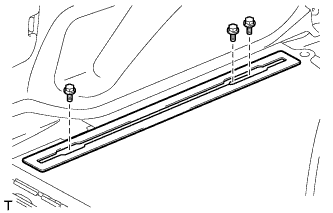
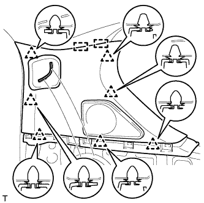
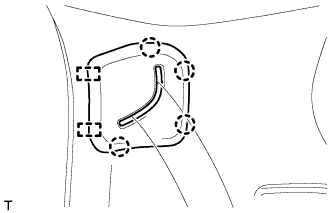

ЗАДНИЙ РЕМЕНЬ БЕЗОПАСНОСТИ № 2 В СБОРЕ > СНЯТИЕ |
| 1. СНИМИТЕ ЛЕВОЕ ЗАДНЕЕ СИДЕНЬЕ № 2 В СБОРЕ |
Для сидений с ручным приводом:
Снимите левое заднее сиденье № 2 в сборе (Нажмите здесь).
Для сидений с электроприводом:
Снимите левое заднее сиденье № 2 в сборе (Нажмите здесь).
| 2. СНИМИТЕ ЗАДНЮЮ НАКЛАДКУ ПОРОГА ПОЛА № 1 |
 |
С помощью отвертки освободите 2 захвата и снимите заднюю накладку порога пола № 1.
| *1 | Защитная клейкая лента |
| 3. СНИМИТЕ ЛЕВУЮ ЗАДНЮЮ БОКОВУЮ ОПОРНУЮ НАКЛАДКУ |
 |
Выверните 2 болта и снимите заднюю боковую опорную накладку.
| 4. СНИМИТЕ ОПОРНУЮ НАКЛАДКУ ЛЕВОЙ ЗАДНЕЙ ДВЕРИ |
 |
Наклейте защитную клейкую ленту вокруг опорной накладки задней двери.
С помощью отвертки освободите 3 фиксатора, 6 захватов и 2 направляющие и снимите опорную накладку задней двери.
| *1 | Защитная клейкая лента |
| 5. СНИМИТЕ УПЛОТНИТЕЛЬ ОБШИВКИ ПРОЕМА ЛЕВОЙ ЗАДНЕЙ ДВЕРИ |
Частично снимите уплотнитель обшивки проема задней двери так, чтобы можно было снять левую переднюю наружную облицовочную панель и левую боковую облицовочную панель полки багажного отделения (Нажмите здесь).
| 6. СНИМИТЕ ЛЕВУЮ БОКОВУЮ НАПРАВЛЯЮЩУЮ ПОЛА БАГАЖНОГО ОТДЕЛЕНИЯ (для моделей с направляющей полки багажного отделения) |
|  |
Выверните 3 болта и снимите боковую направляющую пола.
| 7. СНИМИТЕ ПРАВУЮ БОКОВУЮ НАПРАВЛЯЮЩУЮ ПОЛА БАГАЖНОГО ОТДЕЛЕНИЯ (для моделей с направляющей полки багажного отделения) |
| 8. СНИМИТЕ НАКЛАДКУ КРЕПЛЕНИЯ ПОЯСНОГО РЕМНЯ БЕЗОПАСНОСТИ ЗАДНЕГО СИДЕНЬЯ № 1 |
 |
Освободите 3 захвата и снимите накладку крепления поясного ремня безопасности заднего сиденья № 1.
| 9. СНИМИТЕ ЗАЩЕЛКУ ОБЛИЦОВКИ БАГАЖНОГО ОТДЕЛЕНИЯ № 1 |
 |
Снимите защелку облицовочной панели багажного отделения, повернув ее по часовой стрелке.
| 10. СНИМИТЕ КОЛПАЧОК КРЕПЛЕНИЯ ЗАДНЕЙ КРЫШКИ № 1 (для моделей без задней крышки) |
 |
С помощью отвертки отцепите 2 захвата и снимите колпачок крепления задней крышки № 1.
| *1 | Защитная клейкая лента |
| 11. СНИМИТЕ ЛЕВУЮ ПЕРЕДНЮЮ БОКОВУЮ ОБЛИЦОВОЧНУЮ НАКЛАДКУ ПОЛКИ БАГАЖНОГО ОТДЕЛЕНИЯ (для моделей с задней крышкой) |
 |
С помощью отвертки освободите 2 захвата и снимите переднюю боковую облицовочную накладку полки багажного отделения.
| *1 | Защитная клейкая лента |
| 12. СНИМИТЕ ЗАГЛУШКУ ВЕРХНЕГО ПОРУЧНЯ |
 |
С помощью отвертки освободите 2 захвата и снимите заглушку верхнего поручня.
| *1 | Защитная клейкая лента |
| 13. СНИМИТЕ ВЕРХНИЙ ПОРУЧЕНЬ В СБОРЕ |
 |
Выверните 2 болта и снимите верхний поручень.
| 14. СНИМИТЕ ЛЕВУЮ БОКОВУЮ ОБЛИЦОВОЧНУЮ ПАНЕЛЬ ПОЛКИ БАГАЖНОГО ОТДЕЛЕНИЯ В СБОРЕ |
 |
Выверните болт и отсоедините напольное крепление ремня безопасности заднего сиденья № 1.
Выверните болт и отсоедините напольное крепление ремня безопасности заднего сиденья № 2.
Для правой стороны:
Выверните болт и отсоедините напольное крепление ремня безопасности заднего сиденья № 2.
Освободите 4 фиксатора и 8 захватов и снимите боковую облицовочную панель полки багажного отделения.

| 15. СНИМИТЕ ЛЕВУЮ ЗАДНЮЮ БОКОВУЮ ОБЛИЦОВОЧНУЮ ПАНЕЛЬ В СБОРЕ |
 |
Для моделей без заднего сиденья № 2:
Освободите 7 фиксаторов и 2 направляющих и снимите заднюю боковую облицовочную панель.
|  |
Для моделей с задним сиденьем № 2:
Открепите 7 фиксаторов и 2 направляющие.
|  |
Освободите 4 фиксатора и 2 направляющие, пропустите напольное крепление ремня безопасности заднего сиденья № 2 через заднюю боковую облицовочную панель и снимите заднюю боковую облицовочную панель.
| 16. СНИМИТЕ ЛЕВЫЙ ЗАДНИЙ РЕМЕНЬ БЕЗОПАСНОСТИ № 2 В СБОРЕ |
Выверните болт и снимите плечевое крепление ремня безопасности заднего сиденья № 1.
Выверните болт и снимите ремень безопасности заднего сиденья № 2 в сборе.
| 17. СНИМИТЕ НАКЛАДКУ КРЕПЛЕНИЯ РЕМНЯ БЕЗОПАСНОСТИ ЛЕВОГО ЗАДНЕГО СИДЕНЬЯ В СБОРЕ |
Выверните болт и снимите накладку крепления.
| 18. СНИМИТЕ НАКЛАДКУ КРЕПЛЕНИЯ РЕМНЯ БЕЗОПАСНОСТИ В СБОРЕ (с правой стороны) |
Выверните 2 болта и снимите накладку крепления.